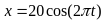
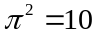
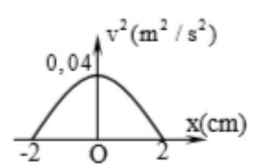

PHẦN I. Câu trắc nghiệm nhiều phương án lựa chọn
Mỗi câu có 4 phương án, chỉ chọn một đáp án đúng (0,25 điểm).
1
Một chất điểm dao động điều hòa có đồ thị của vận tốc theo thời gian như hình vẽ. Phát biểu nào sau đây là đúng?

2
Tìm phát biểu sai khi nói về dao động điều hoà.
3
Đồ thị biểu diễn $x=A\cos(\omega t+\varphi)$. Giá trị cực đại của gia tốc vật dao động là:

4
Một vật dao động điều hòa với tần số góc 5 rad/s. Khi vật đi qua li độ 5 cm thì nó có tốc độ là 25 cm/s. Biên độ dao động của vật là
5
Tìm phát biểu sai khi nói về dao động điều hoà.
6
Đồ thị nào sau đây cho biết mối liên hệ đúng giữa gia tốc $a$ và li độ $x$ trong dao động điều hòa của một chất điểm?


7
Dao động điều hòa có vận tốc cực đại là $v_{max} = 16\pi$ cm/s và gia tốc cực đại $a_{max} = 48\pi^2$ cm/s$^2$ thì tần số góc của dao động là
8
Một chất điểm dao động điều hòa với phương trình $x = 20\cos(2\pi t)$ cm. Gia tốc của chất điểm tại li độ x = 5 cm là
9
Một chất điểm dao động điều hòa với phương trình

(cm). Lấy
. Gia tốc của chất điểm tại li độ x = 10 cm là10
Một chất điểm dao động điều hòa với phương trình $x = 6\cos(10t - \pi/2)$ cm. Tốc độ của chất điểm này khi qua vị trí cân bằng là
11
Một vật dao động điều hòa có phương trình $x = A\cos(\omega t + \varphi)$. Gọi v và a lần lượt là vận tốc và gia tốc của vật. Hệ thức đúng là:
12
Một chất điểm dao động điều hòa với tần số 5 Hz trên quỹ đạo là một đoạn thẳng dài 4 cm. Vận tốc của chất điểm có độ lớn cực đại bằng:
13
Một chất điểm dao động điều hoà với chu kì 1,25 s và biên độ 5 cm. Tốc độ lớn nhất của chất điểm là:
14
Một vật dao động điều hòa có phương trình $x = 2\cos(2\pi t - \pi/6)$ cm. Lấy $\pi^{2} = 10$, gia tốc của vật tại thời điểm t = 0,25 (s) là:
15
Một vật dao động điều hòa có phương trình $x = 5\cos(2\pi t - \pi/6)$ cm. Lấy $\pi^{2} = 10$. Gia tốc của vật khi có li độ x = 3 cm là
16
Một vật dao động điều hoà theo phương trình $x = 2\cos(4\pi t)$ cm. Vận tốc của vật ở thời điểm $t = 0{,}25$ (s) là
17
Một vật dao động điều hoà có phương trình $x=2\cos\left(5t-\frac{\pi}{6}\right)$ (cm). Phương trình vận tốc của vật là
18
Vận tốc của một vật dao động điều hoà tại vị trí cân bằng là 1 cm/s và gia tốc của vật tại vị trí biên là $1,57$ cm/s$^2$. Chu kì dao động của vật là
19
Một chất điểm dao động điều hoà với tần số 4 Hz và biên độ 10 cm. Gia tốc cực đại của chất điểm là
20
Một vật dao động điều hòa dọc theo trục $Ox$, có đồ thị biểu diễn sự phụ thuộc của bình phương vận tốc ($v^2$) vào li độ $x$ như hình vẽ. Tần số góc của vật là
